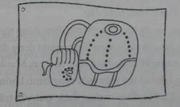

Sáng hôm sau, Jake vừa bước xuống thang thì đã thấy Marika và cha nhỏ trong gian sinh hoạt chung, chuẩn bị bàn ăn cho bữa sáng. Mọi động tác của họ ăn khớp như một cỗ máy vừa được tra dầu: sắp xếp chén dĩa lên bàn ăn, nhúng ngón tay vào bình sôcôla nóng nếm thử và cắt dưa hồng ra. Thầy Balam thì thầm vào tai Marika một điều gì đó làm nhỏ ngây mặt ra cười. Nhỏ lại khúc khích khi cha mình đưa ngón tay bỏng sôcôla nóng lên miệng mút. Tất cả những biểu hiện của họ đều tràn ngập tình yêu thương. Hai cha con hạnh phúc trong một buổi sớm mai yên bình.
Jake đứng thừ người ra trên thang, cậu nhớ lại những buổi sáng như vậy ở Ravensgate Manor: mẹ cậu phụ dì Matilda chiên trứng và làm món thịt heo xông khói, còn cha thì cắm cúi đọc báo ở bàn ăn trong bộ áo ngủ và vớ. Cậu nhớ cả tràng cười khanh khách, những cái ôm và cả những nụ cười ấm áp.
“Có vẻ như cuối cùng cũng có ai đó tham gia cùng chúng ta!” Jake giật mình, miễn cưỡng gác những ký ức về cha mẹ mình sang một bên. Cậu giơ tay chào cha Marika rồi bước tiếp xuống thang. Suốt đêm qua, Jake đã sắp xếp ý tưởng, âm thầm vạch kế hoạch, cậu đã chuẩn bị tinh thần cho một màn kịch cần thiết để thực hiện bước đầu tiên trong kế hoạch của mình. Jake khập khiễng bước nốt bước cuối cùng về phía hai cha con rồi giả vờ thở gấp và nhăn mặt đau đớn. Trong thâm tâm, Jake thật sự cảm thấy cắn rứt vì buộc phải lừa dối Marika và cha nhỏ, nhưng cậu không còn sự lựa chọn nào khác. Cậu tập tễnh bước lại bàn ăn.
“Sao vậy Jake?" Marika hỏi.
Jake cúi xuống rồi nắn nắn chân phải mình. “Tớ vừa ngủ dậy thì chân bị chuột rút. Và... và...” Cậu áp lòng bàn tay lên trán. “Và bây giờ thì tớ thấy không được khỏe lắm.”
Thầy Balam bước vội đến bến cạnh Jake, thầy đặt tay lên trán cậu rồi giục cậu ngồi xuống. “Để thầy xem chân con nào. Không thể xem thường nọc độc của con đuôi vòi được đâu.”
Jake xắn ống quần lên. Thầy Balam kiểm tra vùng da bị trầy trên bắp chân cậu. “Không bị đỏ. Cũng không sưng lên," thầy nhẹ nhõm nói “Nhìn có vẻ ổn. Nọc độc hẳn đã làm cho các cơ thâm tím và co lại."
Jake gật đầu. Nghe có vẻ ổn lắm - và cũng hợp với kế hoạch nữa. Cậu cần ở lại đây trong khi mọi người tới sân vận động để xem trận chung kết. Khi chỉ còn lại một mình, cậu sẽ có cơ hội ngàn năm có một lẻn tới chỗ cần đến.
“Có lẽ con nên nghỉ lại trên tháp thêm một ngày nữa", thầy Balam nói. “Thật là đáng tiếc nếu con bỏ lỡ Thế Vận Hội".
Jake cố làm ra vẻ thất vọng. “Con sẽ nằm nghỉ. Có thể đến tối con sẽ khỏe hơn và có thể tham gia tiệc Giao Mùa”
Marika lay lay cánh tay cha. “Cha, con có thể ở lại với Jake. Chúng ta không thể bỏ bạn ấy một mình. Lỡ như bạn ấy cần gì đó... hoặc là bệnh nặng hơn.”
Jake ngồi thẳng dậy. "Không, tớ sẽ ổn mà. Thật đó. Nếu bạn lỡ mất Thế Vận Hội thì tớ sẽ dằn vặt và cảm thấy có lỗi lắm."
Nhưng cha Marika cau mày lo lắng. Ông chưa kịp trả lời thì cánh cửa nhỏ dành cho gia nhân đã mở ra. Một dáng người nhỏ thó bước vào phòng. Đó là Bach’uuk, bưng một cái tô lớn bằng cả hai tay.
“À, cháo yến mạch...” thầy Balam nói. “Cứ để nó trên bàn đi Bach’uuk. Cảm ơn nhé.”
Ông vẫn nhìn Jake đầy lo lắng.
Lúc Bach’uuk đặt tô cháo xuống bàn, Marika đột nhiên tươi tỉnh lên. “Bach’uuk sẽ ở lại với bạn nhé, Jake? Đằng nào thì em ấy cũng không đi xem trận đấu. Như thế thì bạn sẽ không cảm thấy có lỗi nữa.”
Jake chưa kịp trả lời thì Marika đã nói, “Bach’uuk, Jake cảm thấy hơi mệt. Em để mắt đến bạn ấy trong khi chúng tôi đi xem Thế Vận Hội về nhé?”
“Em biết rồi,” Bach’uuk trả lời. Nó nhìn chằm chằm vào Jake.
Jake đứng dậy. Chắc chắn là cậu chẳng cần ai trông chừng cả, nhất là thằng bé mày rậm này nữa. Jake nghĩ tới những suy đoán ban đầu về kẻ đã bỏ đuôi vòi vào phòng cậu. Bach’uuk có lẽ chính là kẻ đó, vì nó có thể dễ dàng lẻn vào phòng.
Cha của Marika lên tiếng, "Và nếu có vấn đề gì thì Bach’uuk có thể chạy xuống tầng hầm chỗ Quốc sư Zahur. Quốc sư sẽ ở lại tòa tháp để chăm sóc cho nữ Thợ săn Livia.”
Jake lạnh buốt sống lưng. Kế hoạch của cậu vậy là tiêu tùng. Cậu không chỉ bị một thằng nhóc kì quái quản thúc, mà còn bị để lại một mình với ông quốc sư đã để sổng con đuôi vòi ra. Nêu lỡ kẻ đó cố giết Jake thêm một lần nữa thì sao nhỉ?
Cậu lẹ làng suy tính lại. Có lẽ cậu sẽ có cơ hội tốt hơn nếu cùng đi với cha con Marika tới sân vận động. Nơi đó sẽ rất lộn xộn với hàng tá người, cậu có thể bỏ những người kia lại rồi lẻn tới chỗ ngôi đền của Kukulkan. Rốt cuộc thì có thể cậu vẫn giữ được kế hoạch của mình.
Jake duỗi thẳng chân phải ra và bước vài bước quanh căn phòng. "Chắc không cần phải thế đâu. Bây giờ con có thể đứng dậy và đi lại được. Con thấy chân mình khá hơn rồi.” Cậu đi vòng quanh cái bàn để chứng minh điều vừa nói. “Có lẽ nằm nghỉ không phải một ý hay. Con sẽ đỡ hơn nếu cử động luyện tập cho nó một chút. Với lại... với lại con cũng không muốn bỏ lỡ trận đấu.”
“Con chắc chứ hả?” Cha của Marika hỏi, vẫn có vẻ nghi ngờ.
“Thật sự khá hơn nhiều rồi. Chỉ là chuột rút thôi mà.”
Thầy Balam rạng rỡ hẳn lên. "Vậy thì chúng ta xuất phát sớm thôi. Con cứ bước chậm. Nhưng nếu con lại thấy mệt hay bị chuột rút thì...”
Jake gật đầu, làm bộ sôi nổi; “Con sẽ cho thầy biết. Con hứa đấy.”
“Giờ thì ăn hết chỗ cháo yến mạch này rồi đi lấy cờ của chúng ta mang đến chỗ trận đấu nhé!”
Marika vui vẻ làm theo, nhỏ múc cháo yến mạch ra đầy đĩa. Trong cháo còn có cả những khoanh trái cây khô, vòng cây quế và mật ong.
Mọi người hoàn toàn không còn để ý gì tới Bach’uuk, nhưng rõ ràng nó nhận ra sự hiện diện của mình là không cần thiết nữa nên đã lui ra bằng cửa dành cho gia nhân.
Jake thầm quan sát Bach’uuk qua khóe mắt. Cậu thấy vẻ mặt Bach’uuk đầy thất vọng... và cả một chút giận dữ nữa.
Jake mừng là Bach’uuk đã lui đi.
“Ăn đi nào!” Thầy Balam hào hứng. “Chúng ta còn cả một ngày sôi động phía trước đấy!”
***
Phía bên kia cánh cổng tường thành là đám đông tràn ngập khắp mọi phố. Từng toán diễu hành nhỏ vẫy biểu ngữ, ca hát, và một số người nhảy múa.
Marika kéo Jake sang một bên khi một đám nhóc chạy ngang qua, vừa chạy vừa khua phèng la và thổi tù và ầm ĩ. Theo sau đám nhóc, một toán thanh niên trình diễn màn múa rồng Trung Quốc, con rồng được làm toàn bằng lụa. Họ vừa trình diễn vừa cười đùa vui vẻ. Jake nhận ra những người này; hai ngày trước, cậu đã từng xem họ luyện tập trước cổng chùa.
Đoàn múa rồng càng tiến xa thì đám đông tụ tập xung quanh họ càng nhiều. Khao khát đi đến kim tự tháp đè nặng tầm trí Jake. Cậu phải tìm một thời điểm thích hợp để lẻn đi. Nhưng giờ thì mọi người đang tụ tập chật kín ở chỗ này.
Và còn một chuyện nữa.
Kể từ khi họ ra khỏi cổng lâu đài, Marika đã nắm chặt tay Jake.
Rõ ràng là nhỏ sợ lạc mất cậu hay sợ cậu có thể lại đột nhiên thấy mệt. Thỉnh thoảng nhỏ lại nhìn sang cậu. Nhỏ xem đoàn múa rồng trình diễn, hai má ửng hồng lên thích thú; những tia nắng ban mai nhảy múa trong đôi mắt nhỏ. Tay kia của nhỏ đang vẫy vẫy lá cờ đỏ thắm mang biểu tượng của người Maya.

Marika bắt gặp Jake đang nhìn lá cờ. “Đây là cờ của đội Maya. Tụi tớ thua ngay từ vòng đầu rồi; nhưng tụi tớ vẫn phải thể hiện niềm tự hào của mình.”
Thầy Oswin thở hổn hển phía sau, điều này làm cả bọn phải đi chậm lại. “Lẽ ra tôi nên ở lại với Zahur" vị tu sĩ người Anh than thở với thầy Bailam. “Nếu nữ thợ săn qua đời, tôi sẽ cố thu thập những mảnh huyết thạch sót lại.”
“Chúng ta đã lấy ra hết tất cả các mảnh mà chúng ta có thể nhìn thấy trong đêm đầu tiên rồi" thầy Balam từ tốn nói. Jake vờ đi chậm dần rồi tiến gần hai vị quốc sư để nghe lỏm. "Nhưng cô ấy cứ yếu dần. Những mảnh sót lại nhỏ quá không thể lấy ra, hơn nữa, anh sẽ tự đầu độc mình nếu vô tình chạm phải bất cứ một mảnh nào.” Thầy Balam vỗ nhẹ vào chiếc túi nặng trịch treo toòng teng ở thắt lưng. “Tôi đang giữ ngọc viễn thoại của Zahur. Nếu có chuyện gì xảy ra, anh ấy sẽ báo cho chúng ta. Cho đến lúc đó thì chúng ta đừng lo lắng gì trong một ngày tươi sáng như thế này nhé.”
“Được rồi.” Thầy Oswin ấn bàn tay to phè lên cái bụng phệ của mình. “Tôi cũng đã bỏ bữa sáng với cháo yến mạch để sẵn sàng cho tiệc tối tại dinh thự của Trưởng lão Tiberius. Người La Mã luôn biết cách tổ chức những buổi yến tiệc thịnh soạn!”
“Nhưng bọn họ phải thắng trước đã", thầy Balam nhen nhóm một chút hy vọng. “Đội Sumer đánh bại đội chúng tôi mà không bị mất lấy một điểm. Họ rất mạnh, với lại họ cũng đang rất quyết tâm giành lấy Ngọn Đuốc Vĩnh Cửu đấy."
Lúc này, bọn họ đã tới cổng thành, đám đông tập trung về đây ngày một nhiều. Jake bị cuốn theo dòng người đang đổ dồn qua cửa nam thành phố trong khi vẫn đang nắm chặt tay Marika.
Từ chỗ này, Jake có thể thấy một công trình khổng lồ trông hệt như đấu trường La Mã. Đấu trường được trát vữa trắng và sơn với nhiều sắc vàng, nó sáng lóa cả mắt dưới nắng trưa.
Những mái vòm lớn bao quanh sân vận động, bên dưới là những bức tượng đá khổng lồ. Jake hòa theo dòng người, ngước nhìn lên bức tượng thần Zeus dựa người vào lưỡi tầm sét. Đôi vai thần như gánh lấy sức nặng toàn bộ phần mái của sân vận động vầy. Jake nhìn sang một bức tượng khác - thần Odin, thủ lĩnh của các vị thần xứ Nauy. Cậu đoán mỗi tộc người lưu lạc chắc hẳn đều để vài biểu tượng tạc bằng da ở đây.
Khi họ tiếp tục đi về phu sân vận động. Bất thần họ nghe thấy một tiềng gọi lớn. "Này! Mọi người đây rồi”. Pindor vẫy tay chào rồi chạy tới. Khi thằng nhóc nhập bọn, cuối cùng Marika cũng bỏ tay Jake ra. Cậu chà chà bàn tay vào áo khoác, cảm thấy thoải mái vì được tự do... nhưng cũng có một chút thất vọng nữa. Ánh mẳt của Marika có vẻ như đang tố cáo nhỏ không chỉ đơn giản nắm tay Jake để giữ cậu khỏi bị lạc.
Nghĩ vậy, Jake bỗng cảm thấy lâng lâng, nhưng cuốn sổ tay của cha mẹ trong túi áo khoác thầm nhắc cậu nhớ tới nhiệm vụ. Cậu không thể mất tập trung. Hôm nay, cậu phải đến được ngôi đền.
“Chúng ta phải nhanh lên", Pindor nói, mặt nó ngời lên thích thú.
Jake ngoái nhìn về phía thành phố, rồi quan sát đám đông xung quanh.
Có lẽ cậu sẽ trốn được khi bọn họ vào trong sân vận động. Mọi người chen lấn xô đẩy sẽ tạo cơ hội cho cậu lẩn đi.
"Chị Katherine của bạn đã vào trong rồi", Pindor nói làm Jake chú ý.
Jake sật đầu. Có lẽ mọi thứ sẽ tốt hơn nếu cậu đợi cho đến khi bàn bạc với Kady rồi mới bỏ trốn. Chị cậu nên được biết về những mưu tính mà cậu đang cố thực hiện. Biết đâu chị còn có thể giúp cậu nữa.
Jake đảo mắt khi nghĩ tới điều này - phải rồi, cậu đã trở nên tuyệt vọng đến vậy.